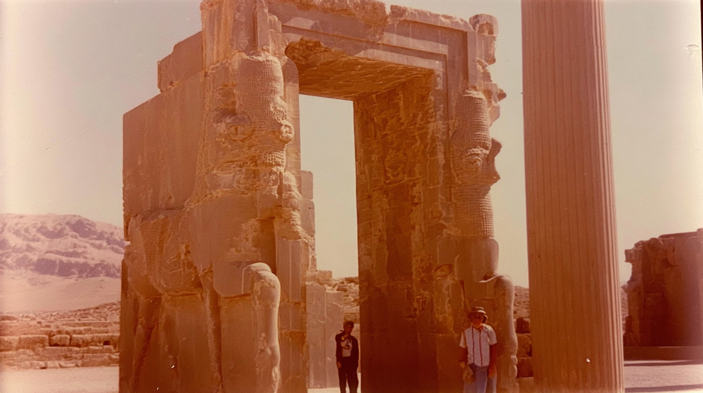
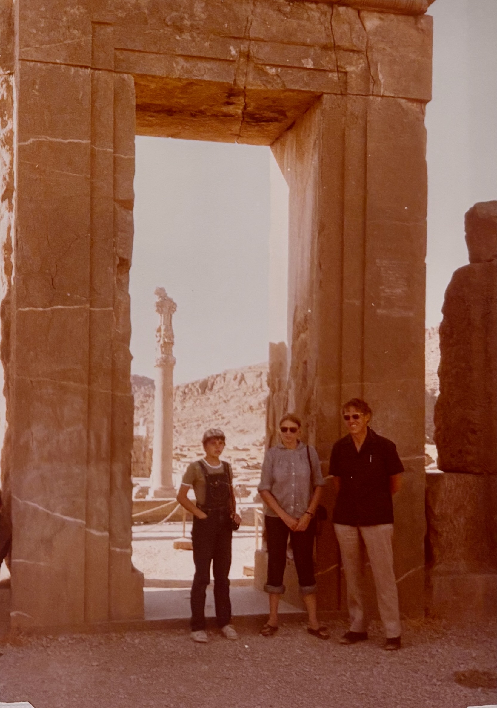
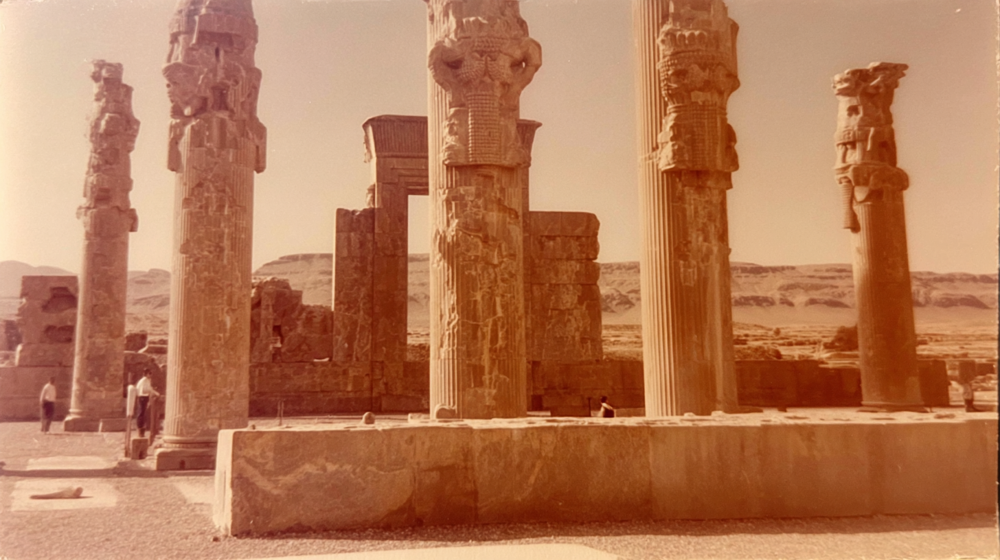
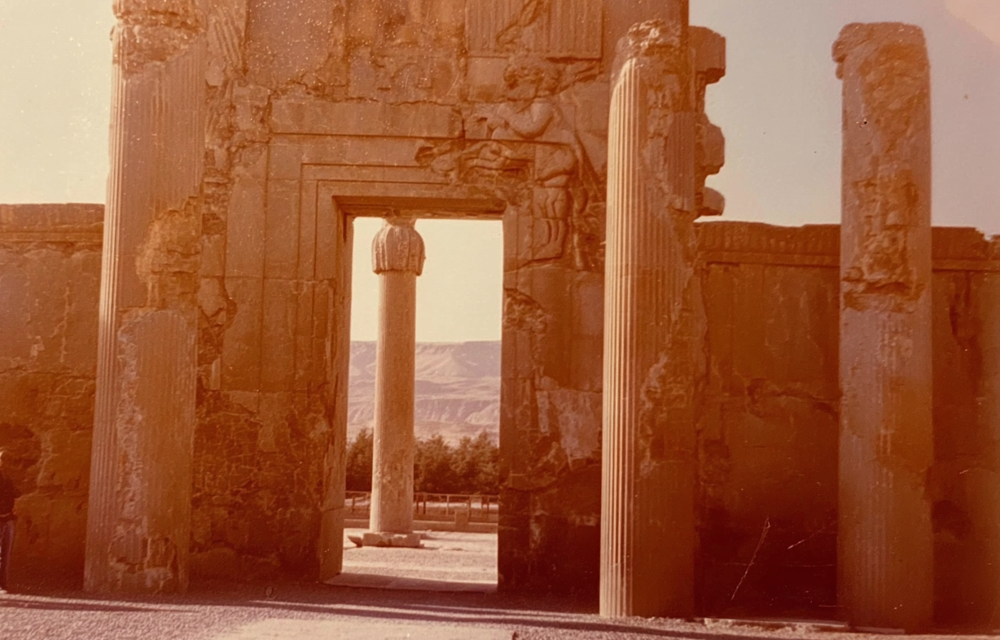
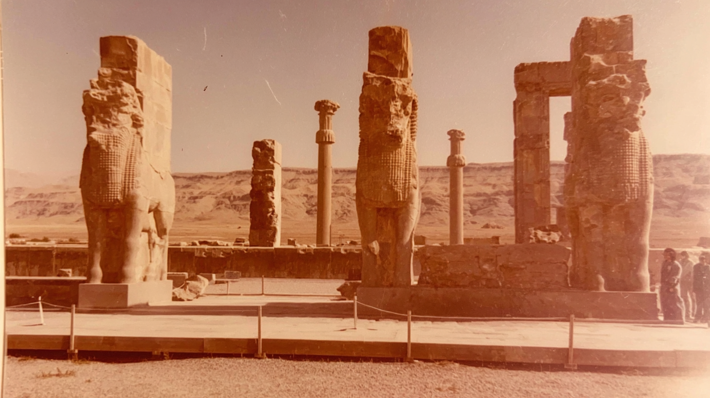

Three monumental guardian statues stand aligned on a raised platform, their immense stone forms set against a wide desert plain and distant mountains under a hazy golden sky.
A carved stone doorway frames a solitary column in the distance, while a small group of visitors stands quietly in the shade of the ancient structure.
Two towering guardian figures flank a massive stone gateway, their weathered surfaces glowing in warm sunlight as visitors pause beneath the monumental entrance.
A row of tall, intricately carved columns rises from a stone base, with scattered visitors walking among the ruins against the vast desert landscape beyond.
close up of archway in Persepolis , 70's analogue photograph of Persepolis columns. sun-bleached colours, subtle dusty pink and muted ochre tones, soft film grain, heat shimmer distortion, textured details, imperfect composition, 35mm kodachrome, muted natural colours, low contrast grading, soft highlights, hazy atmosphere, arid heat.. Light film grain, dimpled texture, organic texture, low digital sharpness, no vivid colours. Shot like contemporary cinema, realistic, alive, subtle faded blurry shutter motion